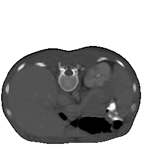
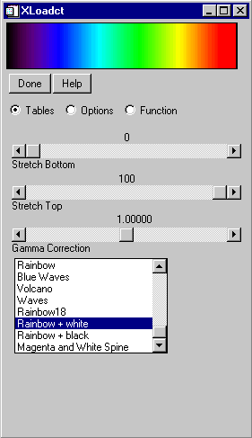
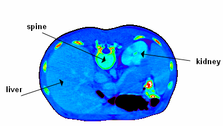
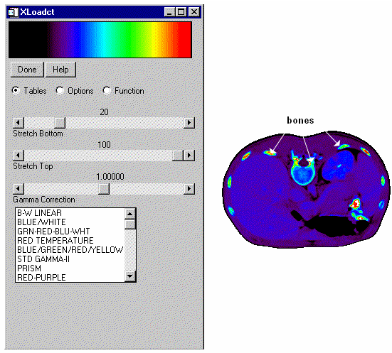
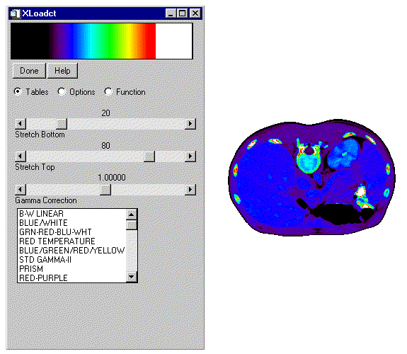
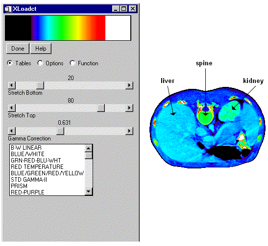

CT Scan Image with Central Control Point Moved One Half to the Right and One Quarter Down

The XLOADCT procedure is a utility that provides a graphical widget interface to the LOADCT procedure. XLOADCT displays the current Direct Graphics color table and shows a list of available predefined color tables. Clicking on the name of a color table causes that color table to become IDL’s current color table. IDL maintains a color table on PseudoColor displays or when the DECOMPOSED keyword to the DEVICE command is set to zero ( DEVICE, DECOMPOSED = 0 ) on TrueColor displays. Many other options, such as Gamma correction, stretching, and transfer functions can also be applied to the colortable.
This routine is written in the IDL language. Its source code can be found in the file xloadct.pro in the lib/utilities subdirectory of the IDL distribution.
XLOADCT [, / BLOCK ] [, BOTTOM = value ] [, FILE = string ] [, GROUP = widget_id ] [, / MODAL ] [, NCOLORS = value ] [, / SILENT ] [, UPDATECALLBACK =‘ procedure_name ’ [, UPDATECBDATA = value ]] [, / USE_CURRENT ]
None.
Set this keyword to have XMANAGER block when this application is registered. By default, BLOCK is set equal to zero, providing access to the command line if active command line processing is available. Note that setting BLOCK=1 will cause all widget applications to block, not just this application. For more information, see the documentation for the NO_BLOCK keyword to XMANAGER.
Note: Only the outermost call to XMANAGER can block. Therefore, to have XLOADCT block, any earlier calls to XMANAGER must have been called with the NO_BLOCK keyword. See the documentation for the NO_BLOCK keyword to XMANAGER for an example.
The first color index to use. XLOADCT will use color indices from BOTTOM to BOTTOM+NCOLORS-1. The default is BOTTOM=0.
Set this keyword to a string representing the name of the file to be used instead of the file colors1.tbl in the IDL directory.
The widget ID of the widget that calls XLOADCT. When this ID is specified, a death of the caller results in a death of XLOADCT.
Set this keyword to block processing of events from other widgets until the user quits XLOADCT. A group leader must be specified (via the GROUP keyword) for the MODAL keyword to have any effect. By default, XLOADCT does not block event processing.
The number of colors to use. Use color indices from 0 to the smaller of !D.TABLE_SIZE-1 and NCOLORS-1. The default is all available colors (!D.TABLE_SIZE).
Normally, no informational message is printed when a color map is loaded. If this keyword is set to zero, the message is printed.
Set this keyword to a string containing the name of a user-supplied procedure that will be called when the color table is updated by XLOADCT. The procedure may optionally accept a keyword called DATA, which will be automatically set to the value specified by the optional UPDATECBDATA keyword.
Set this keyword to a value of any type. It will be passed via the DATA keyword to the user-supplied procedure specified via the UPDATECALLBACK keyword, if any. If the UPDATECBDATA keyword is not set the value accepted by the DATA keyword to the procedure specified by UPDATECALLBACK will be undefined.
Set this keyword to use the current color tables, regardless of the contents of the COLORS common block.
The XLOADCT utility allows you to load one of IDL’s 41 pre-defined color tables and change that color table if necessary.
The following example shows how to use XLOADCT to load a color table and then change that table to highlight specific features of an image. The indexed image used in this example is a computed tomography (CT) scan of a human thoracic cavity and is contained (without a default color table) within the ctscan.dat file in IDL’s examples/data directory. Complete the following steps for a detailed description of the process.
Example Code: See usingxloadct. pro in the examples/doc/image subdirectory of the IDL installation directory for code that duplicates this example. Run the example procedure by entering usingxloadct at the IDL command prompt or view the file in an IDL Editor window by entering .EDIT usingxloadct.pro . The BLOCK keyword is set when using XLOADCT to force the example routine to wait until the Done button is pressed to continue. If the BLOCK keyword was not set, the example routine would produce all of the displays at once and then end.
| 1. | Determine the path to the ctscan.dat binary file: |
ctscanFile = FILEPATH('ctscan.dat', $
SUBDIRECTORY = ['examples', 'data'])
| 2. | Initialize the image size parameter: |
ctscanSize = [256, 256]
| 3. | Import the image from the file: |
ctscanImage = READ_BINARY(ctscanFile, $
DATA_DIMS = ctscanSize)
| 4. | If you are running IDL on a TrueColor display, set the DECOMPOSED keyword of the DEVICE command to zero before your first color table related routine is used within an IDL session or program. |
DEVICE, DECOMPOSED = 0
Since the imported image does not have an associated color table, you need to apply a pre-defined color table to display the image.
| 5. | Initialize the display by applying the B-W LINEAR color table (index number 0): |
LOADCT, 0
WINDOW, 0, TITLE = 'ctscan.dat', $
XSIZE = ctscanSize[0], YSIZE = ctscanSize[1]
| 6. | Display the image using this color table: |
TV, ctscanImage
As the following figure shows, the B-W LINEAR color table does not highlight all of the aspects of this image. The XLOADCT utility can be used to change the color table to highlight more features.
|
 |
| 7. | Open the XLOADCT utility: |
XLOADCT
Select Rainbow + white and click Done to apply the color table.
The following figure shows the resulting XLOADCT display.
|
 |
After applying the new color table, you can now see the spine, liver, and kidney within the image, as shown in the following figure. However, the separations between the skin, the organs, and the cartilage and bone within the spine are hard to distinguish.
| 8. | Now re-display the image to show it on the Rainbow + white color table: |
TV, ctscanImage
You do not have to perform the previous step on a PseudoColor display. Changes to the current color table automatically show in the current image window within a PseudoColor display.
The following figure shows the CT scan image with the Ranbow+white color table.
|
 |
| 9. | Redisplay the color table with the XLOADCT utility: |
XLOADCT
Comparing the image to the color table, you can see that most image pixels are not within the black to purple range. Therefore the black to purple pixels in the image can be replaced by black. The black range can be stretched to move the purple range to help highlight more features.
The Stretch Bottom slider in the XLOADCT utility increases the range of the lowest color index. For example, if black was the color of the lowest index and you increased the bottom stretch by 50 percent, the lower half of the color table would become all black. The remaining part of the color table will contain a scaled version of all the previous color ranges.
| 10. | Within XLOADCT, stretch the bottom part of the color table by 20 percent by moving the slider as shown in the following figure: |
TV, ctscanImage
Remember to click on the Done button after changing the Stretch Bottom slider, then use TV to re-display the image to include the last changing made in the XLOADCT utility.
In the following figure, you can now see the difference between skin and organs. You can also see where cartilage and bone is located within the spine, but now organs are hard to see. Most of the values in the top (the yellow to red to white ranges) of the color table show just the bones. You can use less of these ranges to show bones by stretching the top of the color table.
|
 |
The Stretch Top slider in the XLOADCT utility allows you increase the range of the highest color index. For example, if white was the color of the highest index and you increased the top stretch by 50 percent, the higher half of the color table would become all white. The remaining part of the color table will contain a scaled version of all the previous color ranges.
| 11. | Open XLOADCT: |
XLOADCT
Stretch the bottom part of the color table by 20 percent and stretch the top part of the color table by 20 percent (changing it from 100 to 80 percent).
Click Done and redisplay the image:
TV, ctscanImage
The following figure shows that the organs are more distinctive, but now the liver and kidneys are not clearly distinguished. These features occur in the blue range. You can shift the green range more toward the values of these organs with a gamma correction.
|
 |
With the Gamma Correction slider in the XLOADCT utility you can change the contrast within the color table. A value of 1.0 indicates a linear ramp (no gamma correction). Values other than 1.0 indicate a logarithmic ramp. Higher values of gamma give more contrast. Values less than 1.0 yield lower contrast.
| 12. | Within XLOADCT, stretch the bottom part of the color table by 20 percent, stretch the top part of the color table by 20 percent (change it from 100 percent to 80 percent), and decrease the Gamma Correction factor to 0.631: |
XLOADCT
Redisplay the image:
TV, ctscanImage
All the features are now highlighted within the image as shown in the following figure:
|
 |
The previous steps showed how to use the Tables section of the XLOADCT utility. XLOADCT also contains two other sections: Options and Function . The Options section allows you to change what the sliders represent and how they are used. When the Gang option is selected, the sliders become dependent upon each other. When either the Stretch Bottom or Stretch Top sliders are moved, the other ones reset to their default values (0 or 100, respectively). With the Chop option, you can chop off the top of the color table (the range of the Stretch Top is now black instead of the color at the original highest index). With the Intensity option, you can change the slider to control the intensity instead of the index location. The Stretch Bottom slider will darken the color table and the Stretch Top slider will brighten the color table.
The Function section allows you to place control points which you can use to change the color table with respect to the other colors in that table. The color table function is shown as a straight line increasing from the lowest index (0) to the highest index (255). The x-axis ranges from 0 to 255 and the y-axis ranges from 0 to 255. Moving a control point in the x-direction has the same effects as the previous sliders. Moving a control point in the y-direction changes the color of that index to another color within the color table. For example, if a control point is red at an index of 128 and the color table is green at an index of 92, when the control point is moved in the y-direction to an index of 92, the color at that x-location will become green. To understand how the Function section work, you can use it to highlight just the bones with the CT scan image.
| 13. | Open XLOADCT: |
XLOADCT
Select the Rainbow + white color table.
Switch to the Function section by selecting that option.
Select the Add Control Point button, and drag this new center control point one half of the way to the right and one quarter of the way down as shown in the following figure.
Click Done and redisplay the image:
TV, ctscanImage
The bones in the image are now highlighted.
|
|
|
Pre-4.0 |
Introduced |